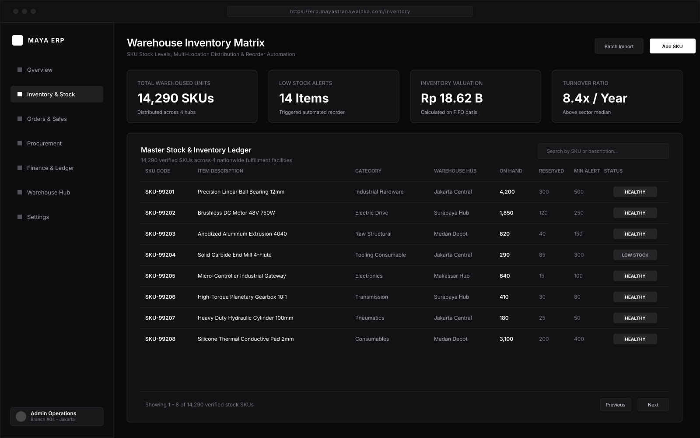
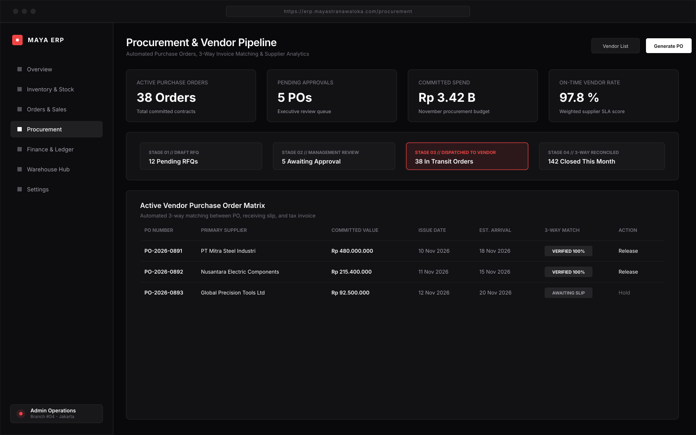
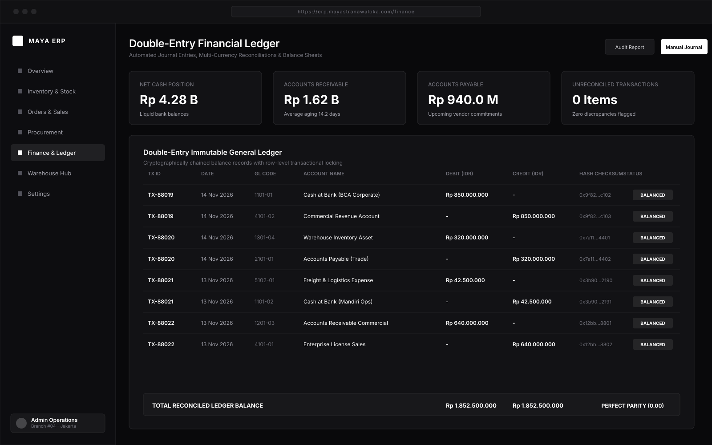
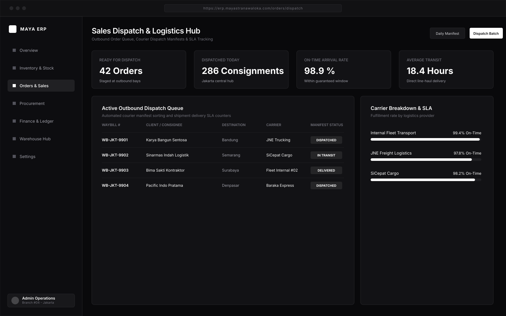
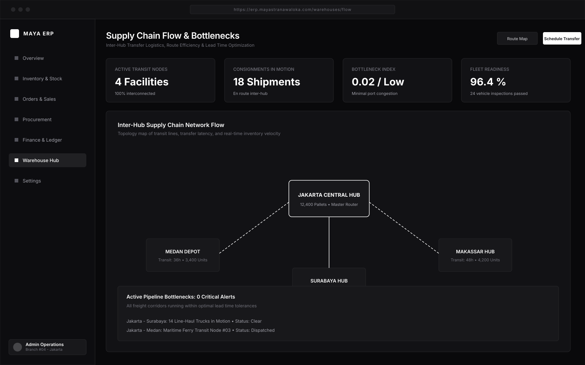
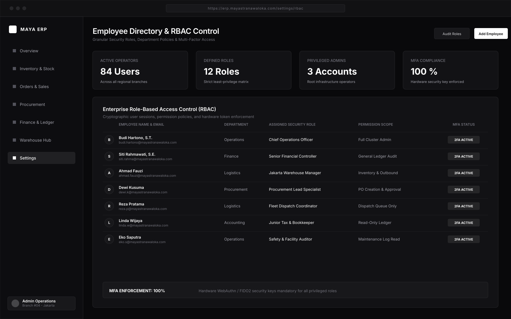
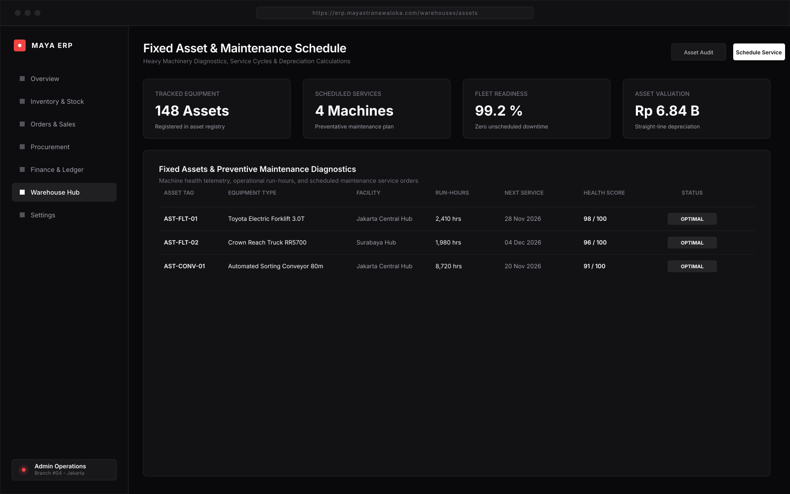
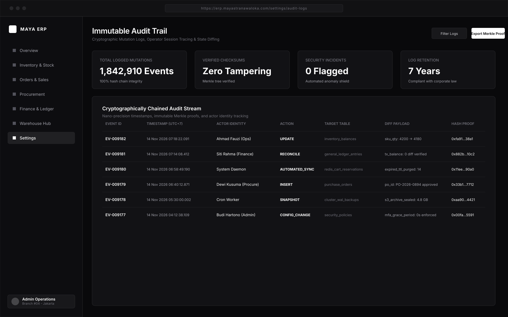
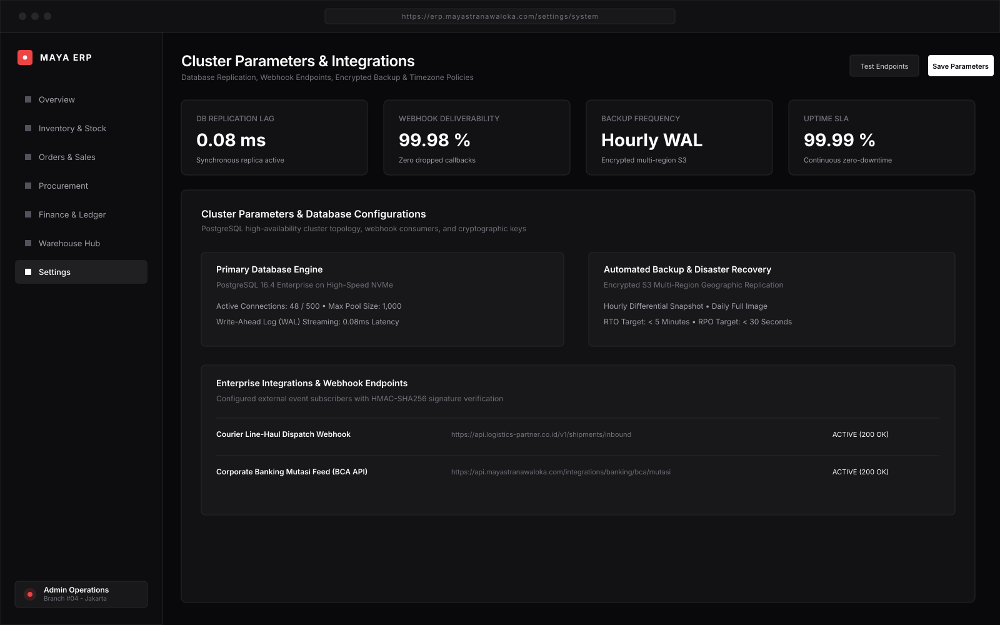

Screen 01 / 10
Executive View
Executive Command Dashboard
Ringkasan KPI operasional perusahaan, margin laba bersih harian, status inventory global, dan alerting anomali sistem secara real-time.
Bespoke Software Architecture
Bespoke ERP suite yang kita rancang khusus buat handle operasional multi-gudang, rekonsiliasi financial ledger otomatis, dan procurement pipeline tanpa dependensi lisensi per-user yang membebani kas perusahaan. Dibangun dengan pendekatan modular monolith performa tinggi, sistem ini sanggup proses jutaan mutasi stok dengan konsistensi data absolut.
Banyak platform ERP komersial di pasaran terlalu lambat, penuh bloated features yang gak kepake, dan menerapkan tagihan lisensi per-seat yang bikin biaya operasional membengkak drastis saat bisnis ekspansi. Di Mayastra Nawaloka, kita bangun solusi ERP yang tailored strictly ke alur supply chain dan operasional nyata klien.
Sistem ini menerapkan strictly double-entry bookkeeping di layer database: setiap pergerakan saldo atau inventory tercatat secara immutable dengan audit log permanen. Sinkronisasi multi-gudang didukung mekanisme row-level locking transaksional, memastikan gak bakal ada selisih stok fiktif atau phantom reads saat traffic order melonjak tinggi.
Ringkasan KPI operasional perusahaan, margin laba bersih harian, status inventory global, dan alerting anomali sistem secara real-time.

Manajemen stok lintas gudang regional dengan nomor batch, nomor rak, tracking expiry date, dan buffer stok otomatis.

Otomasi Purchase Order (PO), pencocokan invoice 3-way matching (PO, Surat Jalan, Faktur), dan scoring performa supplier.

Jurnal akuntansi otomatis, rekonsiliasi mutasi rekening bank korporat, neraca keuangan real-time, dan laporan arus kas periodik.

Manajemen antrean surat jalan pengiriman, tracking armada distribusi, validasi manifest kargo, dan integrasi resi ekspedisi.

Visualisasi alur logistik antar simpul suplai, identifikasi titik lambat distribusi, dan estimasi waktu transit rata-rata.

Struktur hak akses berbasis peran (RBAC) super ketat, autentikasi multi-faktor, dan kontrol wewenang approval dokumen sensitif.

Pencatatan aset tetap perusahaan, kalkulasi depresiasi nilai otomatis, serta penjadwalan servis mesin dan kendaraan operasional.

Log histori perubahan data yang terkunci secara permanen, merekam identitas operator, alamat IP, timestamp nano-detik, dan nilai data sebelum diedit.

Pusat kendali konfigurasi database, webhook pihak ketiga, manajemen zona waktu multi-cabang, dan backup otomatis terenkripsi.